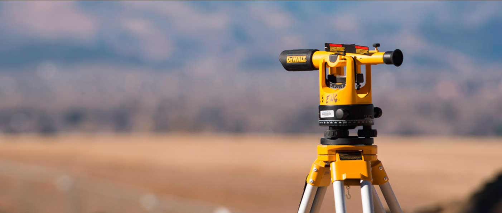

<!DOCTYPE html>
<html>

<head>
  <link href='http://fonts.googleapis.com/css?family=Open+Sans' rel='stylesheet' type='text/css'>
  <title>Mernieks</title>
  <meta charset="utf-8" />
  <link type="textless" rel="stylesheet" href="stylesheet.css" />
</head>

<body>
  <header>
    <nav>
      <div class="wrapper">
        
        <div class="nav_panel">
          <div class="nav_menu">
            <ul class="nav_list">
              <li><a href="/index.html/">Såkums</a></li>
              <li><a href="#pakalpojumi">Pakalpojumi</a></li>
              <li><a href="#parmums">Par mums</a></li>
              <li><a href="#klienti">Klienti</a></li>
            </ul>
          </div>
          <div class="nav_lang">
            <ul class="nav_list">
              <li><a href="#">RU</a></li>
              <li><a href="#">EN</a></li>
            </ul>
          </div>
        </div>
      </div>
    </nav>
  </header>

  <section>
    <div class="slider">
      
      <span class="slider_dot"></span>
      <h1>Mērniecība</h1>
      <p>Zemesgabalo robezu uzmerisana zemes un buvju registracijai</p>
    </div>
  </section>
  <section class="pakalpojumi">
    <h2 id="pakalpojumi">Pakalpojumi</h2>

    <div class="geodezija">
      <h3 id="pakalpojumi_headings">Geodezija</h3>
      <ul class="pakalpojumi_lists">
        <li>Topogrāfiskā uzmērīšana un plānu izgatavošana mērogā 1:250, 1:500, 1:1000, 1:2000;</li>
        <li>Apakšzemes komunikāciju uzmērīšana un saskaņošana;</li>
        <li>Situācijas uzmērīšana;</li>
        <li>Būvasu nospraušana;</li>
        <li>Konstrukciju novietojuma pārbaude.</li>
      </ul>
    </div>

    <div class="mernieciiba">
      <h3 id="pakalpojumi_headings">Mērniecība</h3>
      <ul class="pakalpojumi_lists">
        <li>Zemesgabalu robežu uzmērīšana zemes un būvju reģistrācijai;</li>
        <li>Zemesgabalu robežu noteikšana dabā;</li>
        <li>Atkārtota robežpunktu koordinātu noteikšana un atlikšana dabā;</li>
        <li>Zemesgabalu apvienošana vai sadalīšana dabā, pēc zemes ierīcības prijekta vai detālplānojuma izstrādes.</li>
        <li>Meža transformējamo platību uzmērīšana;</li>
        <li>Robežstigu un vizūru noteikšana;</li>
        <li>Zemesgabalu apgrūtinājumu, robežu un situāijas plānu izgatavošana.</li>
      </ul>
    </div>

    <div class="zemesiericiba">
      <h3 id="pakalpojumi_headings">Zemes ierīcība</h3>
      <ul class="pakalpojumi_lists">
        <li>Zemes ierīcības projektu izstrāde;</li>
        <li>Zemes ierīcības projektu saskaņošana.</li>
      </ul>
    </div>
  </section>
  <section>
    <h2>Pakalpojumu izcenojumi</h2>
    <!--Тут надо сделать таблицу-->
    <section>
      <p>Par topogrāfiskās informācijas izsniegšanu (tajā skaitā ielu sarkano līniju), pieņemšanu, pārbaudi, ievadīšanu datu planšetēs, ievadīšanu datubāzē, reģistrēšanu un nosūtīšanu pašvaldībai:</p>
      <table>
        <tr>
          <td>Pakalpojums</td>
          <td>EUR</td>
        </tr>
        <tr>
          <td>pie objekta platības līdz 0.3 ha (ieskaitot), viens objekts</td>
          <td>21,34</td>
        </tr>
        <tr>
          <td>pie objekta platības virs 0.3 ha līdz 0.5 ha (ieskaitot), viens objekts</td>
          <td>24,19</td>
        </tr>
        <tr>
          <td>pie objekta platības virs 0.5 ha līdz 1.0 ha (ieskaitot), viens objekts</td>
          <td>31,30</td>
        </tr>
        <tr>
          <td>pie objekta platības virs 1.0 ha, papildus par katru nākamo ha,bet ne vairāk kā 135.17 EUR kopā par vienu objektu</td>
          <td>10,67</td>
        </tr>
        <tr>
          <td>objektos, kuros ir 2 (divas) vai mazāk apakšzemes komunikācijas,tāmei tiek piemērots koeficients 0.8</td>
        </tr>
      </table>

      <!-- таблицa Number 2-->
      <p>Par izpilddokumentācijas (tajā skaitā inženierkomunikāciju un ceļu izpildmērījumi) pieņemšanu, pārbaudi, ievadīšanu datu planšetēs, ievadīšanu datubāzē, reģistrēšanu un nosūtīšanu pašvaldībai:</p>
      <table>
        <tr>
          <td>Pakalpojums</td>
          <!--ETo dolzno bit th-->
          <td>EUR</td>
        </tr>
        <tr>
          <td>pie trases garuma līdz 300 m, viens objekts</td>
          <td>21,34</td>
        </tr>
        <tr>
          <td>pie trases garuma virs 300 m, papildus par katriem nākamajiem 100 m, bet ne vairāk kā 135.17 EUR kopā par vienu objektu</td>
          <td>31,30</td>
        </tr>
        <tr>
          <td>Par vienreizēju topogrāfiskās informācijas sagatavošanu un izsniegšanu digitālā formā (objekta platība tiek noteikta pa pieprasīto kontūru):</td>
        </tr>
        <tr>
          <td>objekta platība līdz 25ha (ieskaitot), viens objekts</td>
          <td>2,85</td>
        </tr>
        <tr>
          <td>objekta platība virs 25ha, papildus par katru nākamo ha</td>
          <td>0,07</td>
        </tr>
      </table>
    </section>

    <section>
      <h2 id="parmums">Par mums</h2>
      <p>Mūsu uzņēmuma veiksmīgas pastāvēšanas un darbības pamatā ir kvalitatīvi padarīts darbs, lojalitāte pret katru klientu un demokrātiskas cenas kā uzņēmumiem, tā privātpersonām. Darbinieki mērniecības jomā strādā jau kopš 1996. gada, darba pieredze
        ir uzkrāta strādājot gan valsts iestādēs, gan privātos uzņēmumos, bet 2012. gadā apvienojoties mērniecības nozares speciālistiem tika nodibināts uzņēmums SIA “Ventspils mērnieks”. Šajā īsajā uzņēmuma pastāvēšanas laikā, tas sevi ir pierādījis
        kā uzticams un profesionāls sadarbības partneris. To pierāda mūsu patstāvīgie klienti un viņu uzticība mūsu darbam.</p>

      <!--Person n1-->
      Edgars Ūdis tel. +371 29114401 edgars@ventspilsmernieks.lv

      <!--Logo of certificate-->Zemes ierīcības darbi sertifikāta Nr. BA-72
      <!--Logo of certificate-->Kadastrālās uzmērīšanas darbi sertifikāta Nr. BB-73

      <p>Speciālists veiks uzdevumus, kas saistīti ar nekustamā īpašuma objektu kadastrālo uzmērīšanu un topogrāfisko izpēti būvniecības un teritorijas plānošanas vajadzībām, datu reģistrāciju un aktualizāciju Nekustamā īpašuma valsts kadastra reģistrā (turpmāk
        tekstā – NĪVKR). Uzmērīšanas, zemes ierīcības darbu un NĪVKR dokumentācijas noformēšanu un kārtošanu, kā arī zemes robežu un situācijas plānu, zemes robežu, situāciju un apgrūtinājuma plānu izstrādi.</p>

      <!--Person n2-->
      Toomas Soopargs tel. +371 29235562 tomass@ventspilsmernieks.lv
      <!--Logo of certificate-->Ģeodēziskie darbi sertifikāta Nr. BC-71

      <p>Speciālists veiks uzdevumus, kas saistīti ar nekustamā īpašuma objektu ģeodēzisko izpēti būvniecības un teritorijas plānošanas vajadzībām, ģeodēzisko datu reģistrāciju un aktualizāciju Nekustamā īpašuma valsts kadastra reģistrā. Uzmērīs un izgatavos
        topogrāfiskos plānus objektiem, klientam vēlamajā merogā. Veiks virszemes un apakšzemes inženierkomunikāciju uzmērīšanu un attēlojuma saskaņošanu ar inženierkomunikāciju turētājiem.
      </p>
    </section>

    <section>
      <h2 id="klienti">Klienti</h2>
      <!--logos of companies-->
    </section>
    <section>
      <h2 id="kontakti">Kontakti</h2>

      SIA "VENTSPILS MĒRNIEKS” tālrunis: + 371 29235562, 29114401 e-pasts: birojs@ventspilsmernieks.lv Vasarnīcu iela 9 Ventspils, LV-3601

      <!--Форма обратной связи-- >
Sazināties ar mums

<!--placeholders!-->
    </section>


</body>


</html>
